Máj, Jarní almanach na rok 1858
|
MÁJOVCI
Nová generace českých spisovatelů vystoupila společně almanachem Máj, proto tyto autory označujeme jako družinu májovou nebo májovce.
Máj, Jarní almanach na rok 1858, uspořádal Josef Barák a z nastupující generace umělců do něj přispěli Jan Neruda, Vítězslav Hálek, Karolina Světlá, Adolf Heyduk, Rudolf Mayer nebo Sofie (Žofie) Podlipská. Jejich snahy podpořili i starší autoři – Erben, Němcová a pod pseudonymem rovněž Frič a Sabina (Upomínka na K.H.Máchu). Díky úsilí Vítězslava Hálka vycházel almanach Máj až do roku 1862, ale další ročníky už nebyly tak významné.
Májovci se otevřeně hlásili k odkazu Karla Hynka Máchy, ale sami romantiky nebyli. Mnohem blíže měli k realismu. Zajímali se o sociální problémy a život ve městě i na venkově. Významnou roli v jejich tvorbě hrálo vlastenectví, zároveň ale usilovali o světovost.
K májovcům bývají řazeni také další autoři, kteří do prvního almanachu Máj nepřispěli. Je to především Jakub Arbes, případně Václav Šolc, Gustav Pfleger Moravský nebo Antal Stašek.
|
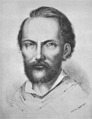
Domnělý portrét K.H.Máchy otištěný v almanachu Máj
|
Jan Neruda (1834-1891)
Neruda se narodil v Praze, kde také zemřel. Jeho otec získal jako vysloužilý voják trafiku v dnešní Nerudově ulici (dům U Dvou slunců). Spisovatel maturoval na Akademickém gymnáziu, ale vysokou školu nedokončil. Působil jako učitel češtiny a později se stal novinářem (Hlas, Národní listy). Jeho láska k Anně Holinové a Karolíně Světlé neměla dlouhého trvání a spisovatel zůstal až do konce života svobodný. Neruda cestoval po Evropě a navštívil rovněž Turecko, Palestinu a Egypt. Aktivně se účastnil spolkového života (Umělecká beseda, Výbor pro vybudování Národního divadla, Spolek českých žurnalistů...).
Je autorem básnických sbírek Hřbitovní kvítí, Knihy veršů, Písně kosmické, Balady a romance a Prosté motivy. Posmrtně vyšly Zpěvy páteční, které uspořádal J.Vrchlický, a Epigramy.
Napsal sbírky povídek Arabesky (Byl darebákem!) a Povídky malostranské, prózu Trhani a cyklus Pražské obrázky.
Neruda byl mistrem fejetonu (Studie krátké a kratší, Žerty, hravé i dravé) a cestopisných črt (Různí lidé, Obrazy z ciziny). Psal rovněž dramata (Ženich z hladu, Francesca di Rimini), divadelní kritiky nebo teoretická pojednání (Škodlivé směry, Moderní člověk a umění).
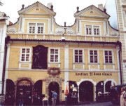
Dům U Dvou slunců v Nerudově ulici
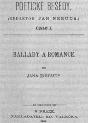
Nerudovy Balady a romance
|
Jan Neruda: Povídky malostranské
K nejznámějším prózám z Povídek malostranských patří Týden v tichém domě,
Pan Ryšánek a pan Schlegl,
Přivedla žebráka na mizinu,
O měkkém srdci paní Rusky,
Doktor Kazisvět,
Hastrman,
Jak si nakouřil pan Vorel pěnovku,
U Tří lilií nebo
Figurky. Povídky se odehrávají v prostředí Malé Strany, které Neruda dobře znal. Hlavními postavami jsou většinou svébytné postavičky, které tuto pražskou čtvrť obývaly. Často jde o podivíny, které nepřijala maloměšťácká společnost. Její pomluvy se jim mnohdy staly osudnými.
Nerudovy básně
Nerudova poezie je velice různorodá. Jeho prvotina Hřbitovní kvítí byla ovlivněna romantismem a nesetkala se s kladným přijetím. Knihy veršů jsou nejrozsáhlejší sbírkou Jana Nerudy, tvoří je tři oddíly – Kniha veršů výpravných, Kniha veršů lyrických a smíšených a Kniha veršů časových a příležitých. Písně kosmické vnášejí do literatury nové náměty z oblasti vědy a vesmírný nadhled. Balady a romance tvoří epické básně. Poslední Nerudovou sbírkou jsou Prosté motivy. Verše z básníkovy pozůstalosti uspořádal Jaroslav Vrchlický do knihy Zpěvy páteční.
Nerudovy fejetony
Neruda pracoval v Národních listech jako fejetonista. Někdy své podčarníky podepisoval trojúhelníčkem. Témata Nerudových fejetonů jsou značně různorodá. Většinou šlo o zajímavé osobní postřehy z cest, každodenního života, oficiálních událostí nebo autorova soukromí.
|
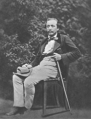
Proč byl pan Vorel neúspěšný?
Kritizuje Neruda kuřáky? Co si myslíš o kouření ty?
Převyprávěj alespoň tři z Nerudových povídek.
Charakterizuj jednotlivé postavy Nerudových povídek.
Co je arabeska?
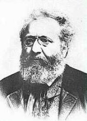
Která z Nerudových básní tě zaujala nejvíce? Proč? Přečti si celou sbírku, ze které tato báseň pochází.
Jaký je rozdíl mezi baladou a romancí? Respektuje Neruda slovníkové definice těchto žánrů?
Čím je výjimečná básnická tvorba Jana Nerudy?
Jak rozumíš Šaldově charakteristice Jana Nerudy „Měl strašnou odvahu, že vzal slova z ulice, nemytá a nečesaná, jak je zastihl, a učinil z nich posly věčnosti.“?
O čem pojednává fejeton Kam s ním?
Které další fejetony Jana Nerudy znáš?
Co je fejeton?
Které fejetonisty znáš?
Napiš vlastní fejeton.
|
Vítězslav Hálek (1835-1874)
Hálkovým rodištěm byl Dolínek u Odoleny Vody, zemřel v Praze. Od gymnaziálních studií byl blízkým přítelem Jana Nerudy. Pracoval jako domácí učitel v rodině zámožného advokáta a později si vzal svou žačku Dorotku Horáčkovou za manželku. Byl redaktorem Národních listů.
Hálek je autorem několika byronských povídek a básnických sbírek Večerní písně, V přírodě a Pohádky z naší vesnice. Napsal realistické povídky Na statku a v chaloupce, Na vejminku, Poldík rumař nebo Muzikantská Liduška a historické drama Záviš z Falkenštejna. Jeho jediný román Komediant se zabývá těžkým postavením umělce ve společnosti.
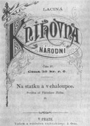
Hálkova kniha Na statku a v chaloupce
|
Hálkova poezie
Hálek byl ve své době velmi oblíbeným autorem. Pro jeho básnickou tvorbu je charakteristický sklon k idealizaci. Hálkovy verše nejsou romanticky vypjaté, ale spíše umírněné. Psal hlavně milostné básně – Večerní písně a přírodní lyriku – V přírodě. Změna nastala v jeho sbírce epických básní Pohádky z naší vesnice, kde se zaměřil také na negativní jevy českého venkova.
Hálek ještě napsal řadu byronských povídek (Alfréd, Dědicové Bílé hory...), ale tyto lyrickoepické básně jsou příliš poplatné ustupujícímu romantismu.
Vítězslav Hálek: Muzikantská Liduška
Hálkova povídka Muzikantská Liduška vypravuje příběh tragické lásky mezi Liduškou a Toníkem. Rodiče chtějí svou dceru provdat za statkáře Krejzu, ale ta se sňatku brání a vnuceného ženicha odmítne přímo před oltářem. Netuší, že Toník mezitím odjel pryč. Nešťastná Liduška ho marně hledá a nakonec se pomátne na rozumu.
|
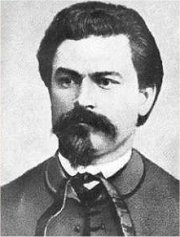
Která z Hálkových básní se ti líbí nejvíce? Proč?
Na rozdíl od Nerudy byl Hálek uznáván jako významný spisovatel už během svého života a jeho poezie byla velmi oblíbená. Čím mohl své současníky oslovit?
Pokus se srovnat tvorbu obou básníků.
Proč se povídka jmenuje Muzikantská Liduška?
Charakterizuj vztahy mezi Liduškou, její matkou a otcem, Toníkem a Krejzou.
|
Karolína Světlá (1830-1899)
Johanna Rottová se provdala za svého domácího učitele Petra Mužáka. Pseudonym si zvolila podle jeho rodné vesnice (Světlá v Podještědí). Společně se svou mladší sestrou spisovatelkou Sofií Podlipskou organizovala hnutí za emancipaci žen. Těžce ji poznamenala smrt jediné dcery. Děj jejích povídek se většinou odehrává na venkově v oblasti Podještědí – Kresby z Ještědí. Totéž můžeme říci o jejích románech Kříž u potoka, Vesnický román, Kantůrčice, Frantina a Nemodlenec. Prózy První Češka a Černý Petříček se odehrávají v Praze. Historický román Zvonečková královna popisuje proměnu společnosti na přelomu 18. a 19. stol. Zajímavé jsou autorčiny memoáry Upomínky a Z literárního soukromí.
Podle povídky Karolíny Světlé Hubička napsala Eliška Krásnohorská libreto ke stejnojmenné opeře Bedřicha Smetany.
|
Karolína Světlá: Kříž u potoka
Děj románu Kříž u potoka se odehrává v Podještědí. Mlynářčina schovanka Evička se vdá za Štěpána Potockého, na jehož rodě leží dávná kletba – každé manželství skončilo tragédií. Do Mikše Potockého se kdysi zamilovala Józa, ale když si vzal jinou, musela se spokojit s jeho bratrem Frantíkem, který jí dával omamný nápoj. Nešťastná Józa nakonec celý rod proklela a sama se zabila. Další potomek spáchal ze žárlivosti bratrovraždu. Neštěstí i kletbu připomíná kříž u potoka. Evička se rozhodne prokletí zlomit. Zdá se, že se jí to nemůže podařit. Po narození dítěte se její muž začíná chovat hrubě, chodí často do hospody a najde si milenku. Štěpánův bratr Ambrož se navíc Evičce vyzná ze svých citů. Ta ho sice také miluje, ale raději Ambrože odmítne a jde prosit Štěpánovu milenku, aby nerozvracela jejich manželství. Její muž vše zaslechne a polepší se. Díky houževnatosti a sebeobětování se tak Evičce podaří kletbu zlomit.
|
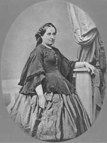
Karolína Světlá
Co si myslíš o Evičce, Mařičce a Štěpánovi? Jak bys tento konflikt řešil/a ty?
Sehrajte tuto klíčovou scénu románu jako divadelní výstup.
V 19. století byla žena ekonomicky závislá na manželovi. Jaké to mělo důsledky?
Co si myslíš o postavení ženy v dnešní společnosti? Mají ženy stejná práva jako muži?
|
Jakub Arbes (1840-1914)
Arbes pocházel z Prahy, kde také zemřel. Byl žákem Jana Nerudy. Pracoval jako odpovědný redaktor Národních listů, ale musel neustále čelit perzekuci a nakonec strávil skoro dva roky v českolipském vězení. Po výpovědi z redakce se ocitl v existenčních nesnázích a musel se živit jako volný novinář a spisovatel.
Arbes proslul jako autor romanet (Ďábel na skřipci, Svatý Xaverius, Sivooký démon, Zázračná Madona, Ukřižovaná, Newtonův mozek nebo Poslední dnové lidstva) a próz se sociální tematikou (Moderní upíři, Kandidáti existence, Štrajchpudlíci, Mesiáš nebo Anděl míru). Byl rovněž významným Máchovským badatelem (rozluštil jeho šifrované deníky) a autorem medailonů řady světových umělců (Nesmrtelní pijáci, Záhadné povahy, Z duševní dílny básníků).
Romaneto
Termín romaneto vymyslel Jan Neruda přímo pro Arbesovy prózy, ve kterých se mísily postupy románové (obšírné popisy, úvahy, líčení prostředí a psychických stavů postav, prolínání dějových pásem...) a novelistické (napínavý děj, malý počet postav, překvapivý závěr). Arbesova romaneta většinou začínají domnělou záhadou, která navozuje dojem působení nadpřirozených sil, ale nakonec je vše racionálně vysvětleno.
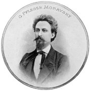
|
Jakub Arbes: Svatý Xaverius
Vypravěč romaneta Svatý Xaverius se náhodně setká s podivínem, který v malostranském chrámu sv. Mikuláše obkresluje obraz svatého Xaveria. Dozví se, že jeho babička pracovala jako služebná u malíře Františka Xaveria Balka, který obraz namaloval a na smrtelném loži jí vyjevil, že obsahuje tajemné poselství, ze kterého by mohla vzejít spása pro miliony lidí. Její vnuk Xaverius se rozhodl toto tajemství rozluštit. Zjistí, že spojnice několika bodů na obraze odpovídají pražským ulicím. Cesta vede od malířova domu až k rokli, kde oba přátelé vykopou rezavou krabici. Než stačí zjistit, co je jejím obsahem, vzplane od svítilny tráva a Xaverius s nálezem uteče a není k nalezení. Znovu se setkávají až po třech letech ve vídeňském vězení. Vypravěč se zde ocitne za své novinové články, Xaverius kvůli obvinění z krádeže. Než mu stačí novinář dosvědčit alibi, Xaverius umírá. Nalezený poklad obsahoval zajímavé, ale bezcenné minerály a polodrahokamy...
Jakub Arbes: Newtonův mozek
Romaneto Newtonův mozek bychom mohli označit za první české sci-fi. Hlavní hrdina totiž cestuje časem pomocí důmyslného přístroje, který letí vesmírem rychlostí světla. Zpětně tak může pozorovat vývoj lidstva až k jeho počátkům.
Další májovci a jejich díla
Sofie Podlipská: Peregrinus
Adolf Heyduk: Cimbál a husle
Rudolf Mayer: Básně
Václav Šolc: Prvosenky
Gustav Pfleger Moravský: Paní fabrikantová
|
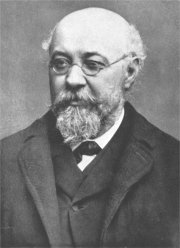
Jakub Arbes
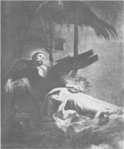
Svatý Xaverius z chrámu sv. Mikuláše
Co vidí hlavní hrdina při cestování časem?
Jaké racionální vysvětlení vymyslel Jakub Arbes pro cestování v čase?
Proč nese romaneto název Newtonův mozek?
Arbes byl nadšeným čtenářem E.A.Poea a E.T.A.Hoffmanna. Srovnej tvorbu těchto tří autorů.
|
Internetové stránky
Neruda: Balady a romance, Zpěvy páteční
Nerudovy básně
Nerudovy fejetony
Neruda: Povídky malostranské
Heyduk: Cigánské melodie
Exkurze
Nerudova ulice, virtuální prohlídka
Nerudova ulice, informace
Akademické gymnázium, Štěpánská ulice, Praha
Filmy
Týden v tichém domě, režie J.Krejčík
(zfilmovány byly také další povídky Jana Nerudy i životní osudy tohoto spisovatele)
Muzikantská Liduška, režie M.Frič
Kříž u potoka
Romaneto, režie J.Soukup
|
Doporučená četba
Arbes, Jakub: Romaneta, Československý spisovatel, Praha 1975 (Svatý Xaverius, Ukřižovaná, Newtonův mozek)
Arbes, Jakub: Z duševní dílny básníků, Odeon, Praha 1977
Budín, Stanislav: Jan Neruda a jeho doba, SNKLHU, Praha 1960
Dílo Jakuba Arbese (35 svazků), Melantrich, Praha 1960
Dub, Ota: Karolína Světlá, Severočeské nakladatelství, Ústí nad Labem 1975
Hálek, Vítězslav: Povídky, Odeon, Praha 1968
Haman, Aleš: Jan Neruda, Praha 1984
Hartl, Oldřich: Rudolf Mayer, Melantrich, Praha 1978
Heyduk, Adolf: Cigánské melodie a jiné písně, SNKLHU, Praha 1955
Janáčková, Jaroslava: Jakub Arbes novinář, Novinář, Praha 1987
Krejčí, Karel: Jakub Arbes, Život a dílo, Josef Lukašík, Praha 1946
Krejčí, K.: Kapitoly o Jakubu Arbesovi, Československý spisovatel, Praha 1955
Křivánek, Vladimír: Jan Neruda, Horizont, Praha 1983
Moravec, Jakub: Jakub Arbes, Svobodné slovo, Praha 1966
Neruda, Jan: Básně, Československý spisovatel, Praha 1956
Neruda, J.: Obrazy ze života, Československý spisovatel, Praha 1981
Neruda, J.: Obrázky z domova i ciziny, Československý spisovatel, Praha 1983
Spisy Jana Nerudy (40 svazků), SNKLU
Světlá, Karolína: Kříž u potoka, Odeon, Praha 1968
Světlá, K.: Povídky z Podještědí, SNDK, Praha 1955
Špičák, Josef: Čtení o Janu Nerudovi, Melantrich, Praha 1985
Špičák, J.: Karolina Světlá, Melantrich, Praha 1980
Vybrané spisy Vítězslava Hálka (6 svazků), SNKLHU
Žeň z díla Vítězslava Hálka, Rebecovo nakladatelství, Praha 1942
Život Jana Nerudy (3 svazky), usp. M.Novotný, Československý spisovatel
|
Vypracuj písemný referát o některé z uvedených knih.
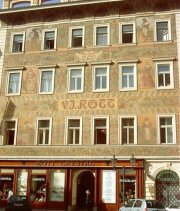
Neorenesanční dům U Rotta v Praze
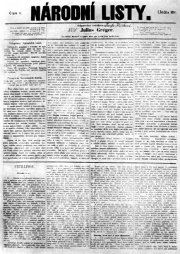
Národní listy
|
|